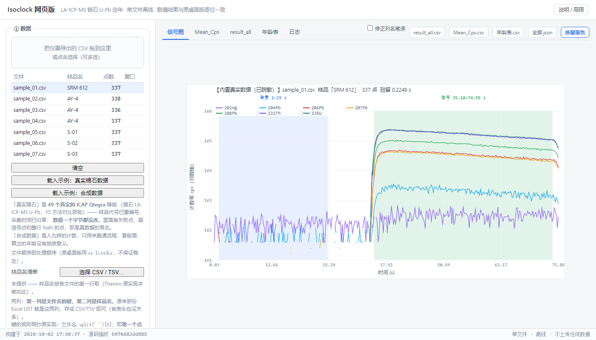
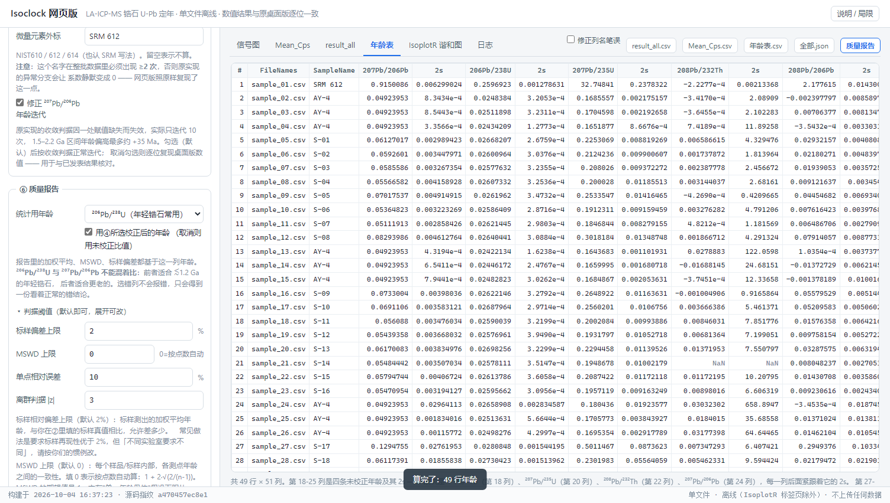
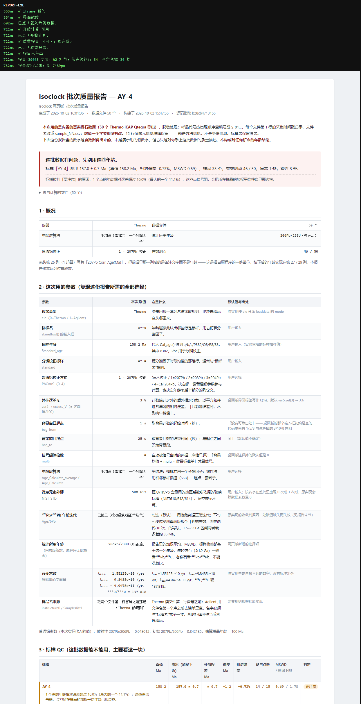
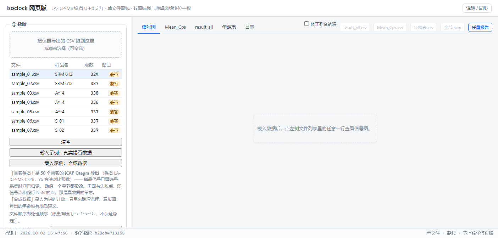
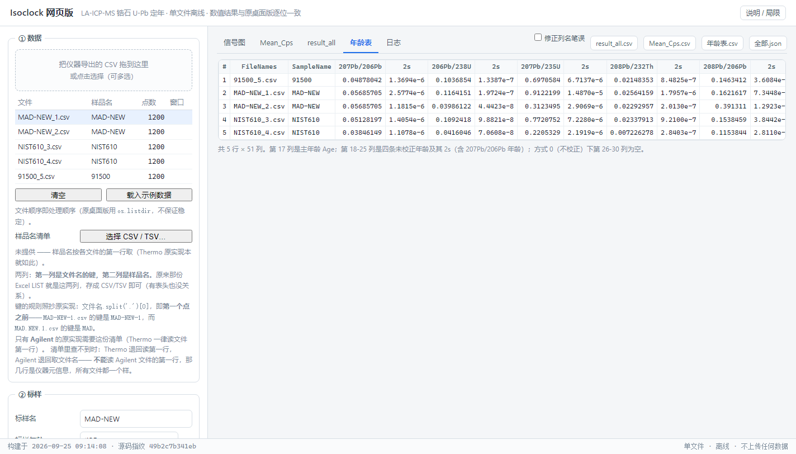

不做锆石的那一半 U–Pb 定年，
现在可以在浏览器里跑
Isoclock 是一个离线的 LA-ICP-MS U–Th–Pb 数据归算程序，专为 含可变普通铅的矿物（磷灰石、榍石、白钨矿、独居石等热液与副矿物）设计。 这个仓库是它的一个维护分支：科学逻辑一行未改，修的是工程问题， 另外补了一个零依赖、可离线、能直接发给同行的单文件网页版。
Isoclock is offline data reduction software for LA-ICP-MS U–Th–Pb dating of minerals carrying variable common Pb — apatite, titanite, wolframite and other hydrothermal or accessory phases. This repository is a maintained fork: the scientific method is untouched, the engineering problems are fixed, and a zero-dependency single-file browser version has been added.
锆石的数据一般贴着曲线走；换成磷灰石、白钨矿这类普通铅含量高的矿物， 数据点会成片落到曲线下方——这正是 Isoclock 存在的理由，也是它和 主流锆石软件（如 Iolite、IsoplotR 的锆石流程）最大的分歧点。
图按 λ₂₃₈=1.55125e-10 / λ₂₃₅=9.8485e-10 / ²³⁸U:²³⁵U=137.818 现算， 见 图解第 1 章。
它在做什么What the software does
激光剥蚀进样 → 质谱测计数率 → 一条完整的归算链 → 每个点的年龄 + 不确定度。 中间那一步"归算"就是 Isoclock 干的活。
- 导入原始信号
直接读仪器导出的原始文件：Thermo（
.csv）、Agilent（.csv+ 可选样品名清单）、 Element（.fin专有二进制，需要先用桌面版转换）。 一次可以丢进一整批，程序按文件名/清单分配样品名。 - 背景校正与离群剔除 自动或手工识别每段信号的背景窗与积分窗，扣背景、算净计数率， 按 2σ 剔除离群测量。
- 标样普通铅校正 用已知年龄的标样反推普通铅的同位素组成，四条路径可选 （²⁰⁴Pb / ²⁰⁷Pb / ²⁰⁸Pb / Cal 204Pb）——这一步是这个软件的看家本领， 见 图解第 3 章。
- 下向分馏标定
激光剥蚀时不同质量数的离子行为不同，比值会随剥蚀深度漂移；
用标样拟合出漂移规律再套到样品上（
Age76Pb）。 - Sample–Standard Bracketing 年龄 用前后夹着的标样做外标，把样品比值换成年龄，输出四个体系 （²⁰⁶Pb/²³⁸U、²⁰⁷Pb/²³⁵U、²⁰⁸Pb/²³²Th、²⁰⁷Pb/²⁰⁶Pb）的年龄表。
输出什么
Mean_Cps.csv
每个积分窗口的平均计数率与标准误。想自己复算或画图，从这里接。
mean count rates + 1σ
result_all.csv
逐点的比值、相关系数 rho、误差传递后的完整结果。
per-spot ratios & errors
年龄表（51 列）
四个体系的年龄与 2σ，分校正前/校正后。可在界面里直接看、导出 CSV。
ages, uncorrected & corrected
一句话定位
Isoclock 不是"又一个锆石软件"。它面对的是普通铅含量不可忽略、且各点还不一样的矿物。 这类样品里，普通铅处理得好不好，直接决定年龄可用不可用——所以它的核心是四条普通铅校正路径， 而不是锆石流程里的那些常规步骤。图解第 2 章用误差传递把这件事量化了。

这个分支改了什么Changes in this fork
先说清楚归属
软件与科学方法都是 Guoqi Liu 的（East China University of Technology， sndjgm@foxmail.com），上游仓库 sndjgm/Isoclock，Apache-2.0。 这里是一个 fork，没有改动任何一条科学逻辑。 如果你要引用方法或结果，请引用原作者与他的软件。
A. 对上游 Python 程序的工程修复
这些改动已经在上游之上提交，每一条都做了逐位/逐字节对照， 唯一目的是让它装得上、跑得动、出错时说得清——输出数值一个都没动。
| 改动 | 为什么 |
|---|---|
| 5 个重复的还原函数合并成一个共享骨架（净减约 500 行） | 行为逐位相同：6 样品 × 5 路径 × 23 列 = 690 个输出格全部一致 |
loaddata 只按 float 读取需要的 8 列 |
39.0 → 9.5 ms/样品（4.1×）。原实现先把每一列都当文本解析一遍 |
requirements.txt 修正 |
原文件列了 5 个 PyPI 上根本不存在的包（tkinter、csv 等标准库成员），
任何人首次安装都会失败 |
LISENSE → LICENSE，补全 Apache 2.0 全文 |
文件名拼错导致 GitHub 与 Zenodo 识别不出许可证 |
转换脚本里的 eval(seq.pop()) 换成 int(float(...)) |
把取自 CSV 文件名的字符串拿去执行，是任意代码执行漏洞 |
except 块补上 traceback；接管 Tk 回调异常（27 + 1 处） |
错误原本会静默消失，打包成 .exe 后尤其明显 |
| 删除 10 个未使用的 import | 为了没用的东西拉进了 pyDes、openpyxl、base64 |
重写 README + 新增 CITATION.cff |
原快速开始里有三条走不通的步骤（命令格式错、文件名不存在、包里不存在）， 并补上说明书里有、README 里没有的关键前提 |
Isoclock2.0.py 从 4099 行降到 3602 行（−12.1%）。
B. 新增：一个纯浏览器的单文件网页版
把数值内核移植成 JavaScript，打包成一个 HTML 文件。没有后端、没有依赖、 不需要装 Python——双击就能用，可以直接当附件发给同行。
| 能力 | 状态 |
|---|---|
| 数值内核（成对求和、nanmean/SK2model、15 条还原路径、年龄层） | 与桌面版逐位相同 |
| Thermo 读取 | 严格匹配 + 兼容匹配两条路径 |
| Agilent 读取 + 端到端链路 | 已修好并加了反向哨兵 |
| 积分窗口自动识别 | 与桌面版一致 |
| 两个 CSV 的输出排版 | 逐字节相同 |
| 批次质量报告（新功能） | 单文件 HTML，七节，见下 |
Element .fin |
不支持（专有二进制，请用桌面版转换） |
标样漂移回归 regression() |
仍未接线（上游本来就没有控件能触发它） |
新增的「批次质量报告」
跑完一批数据之后，最要紧的问题不是"年龄是多少"，而是"这批数据能不能用"。 桌面版只输出逐点年龄、从不做归组统计，所以这一步补在网页版里： 点一下按钮，导出一份独立 HTML，把这些事一次说清。
标样 QC
每个标样测出年龄与真值偏差百分之几、内部一致性 MSWD 是多少、 哪几个点被判为离群。判定一定跟着理由——"偏差 0.0000% 但内部 MSWD 高达 325" 这种情况只印一个黄灯，读的人会以为没问题。
样品结果汇总
按样品名归组，给出加权平均年龄 ± 误差、MSWD、参与点数， 配一张手绘的内联 SVG 误差棒图（标样蓝色、样品青色、真值红色虚线）。
参数与判据都列清楚
报告里列全 16 个参数：是什么、在原程序里叫什么、本次取值、默认值与出处。 没有可靠出处的那两个默认值会直接写出来，不假装有依据。
四个判据阈值可改
标样偏差 ≤2%、MSWD ≤ 1+2√(2/(n−1))、单点 2s 相对 ≤10%、离群 |z| ≤3。 界面里可改，报告会标出「已改」。
必须说清楚的一条
加权平均、MSWD、以及上面四个阈值，都是网页版新增的，不是原程序的输出。 报告里每一节都重复声明了这一点。统计量按 Wendt & Carl (1991) / Isoplot 的定义手算， 检验用的判据是在测试里按定义另写一遍的独立值，不是拿自己的实现比回去。


Ctrl+P 能直接存成 PDF。注意最上面那句话：加权平均 / MSWD / 阈值都是网页版新增的，
不是原程序的结论。
三种拿法Three ways to get it
同一套内核 —— 后两种装的都是同一份 isoclock.html。
按"要不要装东西"排，最省事的是什么都不装。
单文件网页版
一个 isoclock.html，{{PAGEKB}} KB。下载后双击，
用你现有的浏览器打开就能用。不装 Python、不装依赖、不联网 ——
样式和图都在这个文件里面。
为此涨到 {{PAGEKB}} KB 上下是故意的：里面内嵌了 50 个真实的锡石 LA-ICP-MS 导出（压缩后 {{GZIPKB}} KB），所以开箱就能拿真数据跑一遍完整流程， 而不是只能看合成出来的假计数。一个网页 {{PAGEKB}} KB 仍然比一张手机照片小。
Windows / macOS / Linux 通用，只要那台机器有浏览器。
桌面程序 .exe
单个 .exe，约 10 MB（Windows 上实测 9.8 MB、CI 构建约 12 MB，
随打包用的 Python 版本略有出入）。
双击就是一个真正的程序窗口：有图标、
没有地址栏，导出走系统的"另存为"，文件名和扩展名都是对的。
需要 Windows 10/11。用的是系统自带的 WebView2 运行时 —— 一般都有；确实没有的话装一次即可（免费，约 2 MB）。
桌面程序 .app
同一个窗口程序的苹果版，Apple Silicon 与 Intel 各一份。
解压后把 .app 拖进「应用程序」就行（解压后约 54 MB）。
第一次打开请右键 → 打开。产物只有 ad-hoc 签名（苹果的开发者签名 要年费），Gatekeeper 会拦一次；右键放行一次之后，正常双击即可。
这个程序的读者很可能一年只用两三次，而且常常是在别人的电脑上、 或者实验室那台不让装软件的工作站上。对这种用法，"下载一个文件、双击打开" 比"装一个程序"合适得多 —— 用完可以直接删掉，什么都不留下。
桌面程序存在的理由只有三条：真正的应用窗口、导出走系统原生"另存为"、
macOS 上能进「应用程序」。它算的还是同一份网页版 ——
壳里没有一行数值代码，只是把 isoclock.html 装进系统自带的
WebView（Windows 用 WebView2，macOS 用 WKWebView）。
三个平台各由一台对应系统的构建机产出 —— 因为 PyInstaller 不能 交叉编译：Windows 的 exe 只能在 Windows 上构建，macOS 的 app 只能在 macOS 上构建。苹果那份必须在苹果的机器上出，这是没法绕过的。
每次构建分两步把关：先跑 {{TESTS}} 项数值比对（webgui/test_*.js，
{{SUITES}} 套，与桌面版逐位对照），再把产物本身启动一次、跑页面内自检
（{{SELFTEST}} 项，走的是真按钮那条路）。任一步不过就不发布。
网页版怎么用Using the browser version
不需要安装任何东西。打开页面，左边填参数，右边看结果。
- 左侧 ① 数据把一整批原始文件拖进去（或点选）。文件列表会逐个显示解析状态。
- 左侧 ② 标样填标样名称与它的真值年龄——标样年龄是后面所有普通铅参数的来源， 填错会一路错到底。
- 左侧 ③ 仪器与积分窗口选 Thermo 或 Agilent。窗口可以自动识别，也可以手填。
- 左侧 ④ 普通铅校正选校正方式。想要看校正前的原始比值就选"不校正"。
- 左侧 ⑤ 年龄层选年龄计算方法、外挂误差 Ɛ、算法（平均法/线性法）。
- 右侧点「开始计算」。之后在五个标签页里看信号图 / Mean_Cps / result_all / 年龄表 / 日志， 或者点工具栏的质量报告导出那份 HTML。
不确定就用内置示例
左栏有两个示例按钮，点下去连参数一起配好——先看一遍完整的输出长什么样， 再拿自己的数据进来。
「载入示例：真实锡石数据」是 50 个真实的 Thermo iCAP Qtegra 导出
（锡石 LA-ICP-MS U-Pb，一套方法对比实验）。它不是挑出来的"干净"数据：
里面有剥蚀失败的空文件、有信号很弱的点、有 4 个文件的积分窗口压根没定出来
（比值列整行 NaN）—— 这些都会在日志里点名说清，质量报告会把它们剔除而不是
拿去污染平均。所以你可以拿它当一次真实的练习：看程序怎么处理一批不完美的数据。
脱敏处理只有三件事：样品代号重编号成 S-01…、每个文件第 1 行的采集时间归零、
文件名改成 sample_NN.csv；数值一个字节都没有改，
12 行仪器元信息原样保留（那是方法信息，不是身份信息）。标样名保留原名。
顺带把数字摆出来：它的标样 AY-4 按内置参数跑出
{{AY4}} ± {{AY4SE}} Ma（2σ，MSWD {{AY4MSWD}}），与两个公开发表的 ID-TIMS 值
（158.2 ± 0.4 Ma、151.9 ± 2.2 Ma）都对得上 —— 这正是
webgui/test_demo_real.js 里那条判据。
「载入示例：合成数据」是另一条路：人为拼出来的计数，只用来演示版面。 它不满足 U-Pb 体系关系，出报告时顶部会挂一块红色声明确认这件事。

为什么是单文件，而不是"网页部署 + 后端"
因为这个软件的使用场景是：一台装了仪器的电脑、一个不能上网的实验室、 一份要发给合作者的数据。要求使用者去装 Python、再起一个服务，是把人挡在门外。 一个 HTML 文件可以走邮件、走 U 盘、走任何一台电脑的浏览器，十年后还能打开。
代价是全部计算跑在浏览器里，几十个文件没问题，上千个文件会慢。 真要跑大批量，用桌面版。
| 项 | 桌面版（上游） | 网页版（本分支） |
|---|---|---|
| 安装 | Python 3.9 + 依赖 + Tk | 不用装，双击 HTML |
| 仪器支持 | Thermo / Agilent / Element | Thermo + Agilent（Element 请用桌面版转换） |
| 数值结果 | 逐位相同（唯一残留：exp/log 列 ≤8.6e-11 的相对偏差） | |
| Agilent 样品名 | 弹窗选 Excel 清单（xlrd） | 选两列 CSV/TSV；不选则取文件名第一个点之前 |
| 批次质量报告 | 无 | 新增，独立 HTML |
| 批量性能 | 好 | 几十个文件没问题，上千个会慢 |
| 文件状态 | 每批跑完要重启程序 | 刷新页面即可 |
把原理讲清楚Understanding the method
这个仓库里还有一份中文图解教程：8 章、56 张手绘 SVG 图， 从"U-Pb 定年的三条腿"讲到代码地图。它假设你完全不懂， 并且明确写出哪些地方是猜测、哪些地方有更好的做法。
第 1 章 · 三个计时器
²³⁸U→²⁰⁶Pb、²³⁵U→²⁰⁷Pb、²³²Th→²⁰⁸Pb 三条独立的钟。
年龄公式为什么长成 ln(r+1)/λ，为什么单次测量能出四个年龄，
²⁰⁷Pb/²⁰⁶Pb 年龄为什么特殊。
第 2 章 · 分水岭
锆石结晶时把铅几乎全部排出，所以一条谐和线就够用； 磷灰石、白钨矿这些矿物会把普通铅包进去。图解用误差传递把"难多少"算成了数字， 而不是只给一句定性的说法。
第 3 章 · 普通铅说透
普通铅到底是什么、²⁰⁴Pb 为什么是它的指纹、为什么偏偏它最难测、 四条校正路径各拿什么当"比例尺"、Stacey–Kramers 两阶段模型怎么来的、 那些默认值凭什么这么设。
第 4–8 章 · 流程、说服力、局限、代码地图
从原始文件到年龄每一步在干什么；怎么让别人接受你的结果； 哪些地方承认是猜的、可以怎么改进；以及代码里哪个函数对应哪一步。
常被问到的两件事
「外挂误差 Ɛ」到底是什么？
界面上的 Ɛ(%)（代码里叫 excess_V，默认 3%）是
计数统计之外的额外相对分散：剥蚀效率波动、气溶胶传输损失、基体效应、
标样与被测样品不匹配、软件拟合残差——这些都没有体现在 2σ 里，用一个常数顶上。
它以平方和并进相对误差（sqrt((比值2s/比值)² + Ɛ²)再乘到年龄误差上），
不改变年龄值。
三处口径不齐（原实现如此，这里照抄但说明）
① 内部相对误差用的是比值的 2s（2σ），而 Ɛ 直接与它平方相加——严格说混了置信水平； ② ²⁰⁷Pb/²⁰⁶Pb 年龄的误差不含 Ɛ，同一行四个年龄口径不一致； ③ 把 Ɛ 调大会让 MSWD 变小，所以不能用它去"改善"一致性。
「MSWD 超过多少算不合格？」
报告里的默认判据是 1 + 2√(2/(n−1))：χ²/(n−1) 的取样标准差近似 √(2/(n−1))，
超过"1 + 2 倍取样标准差"就值得看一眼。注意它是点位级的一致性指标，
与"这批年龄跟真值差多少"是两回事——两个都要看，见上面标样 QC 那张卡。
验证到什么程度，以及它的边界Verification & honest limits
这一节比上面都重要。一个定年工具最该交代的不是功能列表，而是 它凭什么值得信、它在哪儿不能信。
凭什么是逐位相同
参考值不是"把算法再抄一遍"，而是用 importlib 加载真实的
Isoclock2.0.py（stub 顶掉 tkinter）算出来的。否则就成了
"拿我的实现验证我的实现"。
| 测试对象 | 覆盖规模 | 结果 |
|---|---|---|
| 成对求和 / nanmean / nanstd | NumPy 语义逐个复刻 | 逐位相等 |
| 数值内核（3 样品 × 5 路径 × 23 列） | 345 个输出数值 | 逐位相等 |
| 5 个还原函数 | 690 个输出格 | 0 处不一致 |
| Thermo / Agilent 解析 | 1400 个数值 | 全部相等 |
| 积分窗口识别 | 17 项 | 全部通过 |
dataprocess 端到端（4 路径 × 2 态） | 两份 CSV | 逐字节相同 |
| 年龄层（19 组参数 × 51 列） | — | 全部相等 |
| Agilent 端到端 | 20 项，含反向哨兵 | 全部通过 |
| 网页版统计（QC） | 63 项，判据按定义另算 | 全部通过 |
| 报告生成 | 50 项，含恶意输入转义 | 全部通过 |
| 合计 | {{TESTS}} 项（{{SUITES}} 套）+ {{SELFTEST}} 项页面内自检 | |
必须说出来的局限
真实数据这条待办：Thermo 侧已结清，Agilent 侧还没有
Thermo / iCAP Qtegra 侧已经用真文件验过了。
一批 50 个真实导出（锡石 LA-ICP-MS U-Pb）全部走严格读取路径，
并且整条链跑到底：标样 AY-4 出 {{AY4}} ± {{AY4SE}} Ma（2σ），与两个公开发表的
ID-TIMS 值相容。这批数据已内嵌进网页版作为默认示例，
判据写在 webgui/test_demo_real.js 里，每次 CI 都会重跑。
它同时把两件事变成了机器可查的：脱敏没漏（样品名必须全在白名单内）、
内嵌数据没被换过（明文 JSON 的 sha256 逐字节核对）。
还没验的是 Agilent 的真实导出。Agilent 那条路径的判据到目前
仍是"合成变体"，按"真实导出可能长什么样"设计。手上没有 Agilent 的真文件。
请把你遇到的读不进去的文件发出来，这是眼下最有用的贡献。
Element 的 .fin 也仍然需要桌面版先转换。
- 三项科学逻辑问题（改了会变数值，所以一律没动，只写进 Known issues）：
Age76Pb固定的 10 次迭代，会让 1.5–2.2 Ga 区间偏高最多 +34.9 Ma； 比值恰在起点附近时甚至会返回 0 或负年龄。PbCorrS == 3这条路径存在除零。- Hg 对质量 204 的校正恒为 0。
- 网页版把
Age76Pb做成了可切换的收敛修正，默认勾上 （按判据正常迭代）；取消勾选则逐位回到桌面版数值。 这是本分支唯一可能让同一批数据给出不同数字的地方， 两个口径都随时可复现——分别对应"要正确"和"要和已发表结果对上"两个用途。 - 内置的"真实锡石"示例只有一批、且只来自一台仪器（Thermo iCAP Qtegra， 锡石 U-Pb）。它证明的是"真文件读得进去、整条链算得对"， 不等于把各种仪器、各种矿物、各种导出格式都试过了。 合成那条示例则完全不满足 U-Pb 体系关系，只能用来熟悉界面。
- 普通铅模型是"平均猜测"：Stacey–Kramers 是个全球平均模型， 具体样品未必服从。图解 3.8 节专门承认了这件事。
已知的上游问题（本分支未动）
- 状态文件
Time_setting.npy/Coments.npy用的是 CWD 相对路径 +allow_pickle=True。原作者可能是有意让每批数据各带一份积分窗口设置， 改成全局目录反而会破坏这个功能，所以保持现状。 - 输入目录与输出目录必须不同；每批数据跑完需要重启程序（网页版刷新即可）。
- 标样漂移回归
regression()写了但没接线——上游没有界面控件能触发它。
关于这份文档About this page
把话说在前面
这个站点的文字、英文翻译、图表与全部工程改动的说明，由 AI 助手协助整理， 经仓库维护者审阅后发布。AI 会出错——发现错误请 开 issue， 这条比任何其它反馈都有用。
维护者是这套软件的使用者，不是 Isoclock 的作者，也不是这里引用的 任何一种方法的提出者。凡是涉及方法学的判断，一律以原始论文、官方手册和 上游代码为准；本页与图解教程只做解释。
页面上的每一个数字（334 项比对、690 个输出格、4.1×、876 px 等）都来自仓库里 真正跑过的记录，出处在 webgui/README.md 与 docs/README.md， 重建命令也在那里。没有凭印象写的数。
引用、许可、联系Citation, licence, contact
引用软件
方法、软件、实现都归属于 Guoqi Liu（East China University of Technology）。
引用请用上游仓库与随附的 CITATION.cff：
github.com/sndjgm/Isoclock
联系方式 sndjgm@foxmail.com
这个 fork 只是工程实现上的维护，不构成一个新的软件，不建议单独引用。
方法学参考文献
Chew, D.M., Petrus, J.A., Kamber, B.S. (2014). U–Pb LA–ICPMS dating using accessory mineral standards with variable common Pb. Chemical Geology 363, 185–199.
Stacey, J.S., Kramers, J.D. (1975). Approximation of terrestrial lead isotope evolution by a two-stage model. EPSL 26, 207–221.
Wendt, I., Carl, C. (1991). The statistical distribution of the mean squared weighted deviation. Chemical Geology 86, 275–285.
²⁰⁸Pb 校正路径遵循 Zack et al. (2011)。
许可
Apache License 2.0，与上游一致。可以自由使用、修改、再分发， 请保留版权与许可声明。